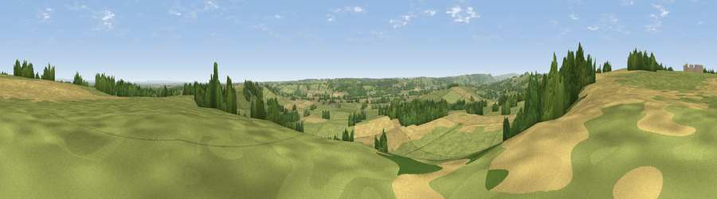

Viewpoint near Kirkby Overblow
#19175 in England · top 24% of its area beats it · near Kirkby OverblowThe view, rendered

A 360° render of this exact spot computed from the terrain model, tree cover and land cover — summer colours, afternoon light, calibrated against photographs of famous viewpoints. Real trees, hedges and buildings will differ in detail.
The panorama
Grey silhouette: terrain skyline in each direction (720 bearings, Earth curvature and refraction included). Dashed green: skyline with trees (+15 m) and buildings (+8 m) as obstacles. Blue strip: how far the ground is visible on each bearing.
Where the view opens
Wedge length = distance to the farthest visible ground on that bearing (vegetation-aware). Rings at 10, 25 and 50 km.
What fills the view
68% grassland · 19% cropland · 11% woodland · 2% built-up
Angular shares of the visible panorama (visual magnitude), not map area. Landscape diversity 0.39 (0–1 Shannon).
Key numbers
More beautiful places nearby
The staircase of upgrades: each row has a higher view potential than everything closer. Driving times are estimates from straight-line distance, calibrated against real road routing — check an actual route before setting out.
| Place | Direction | Drive | Score |
|---|---|---|---|
| Walton Head Whin | NW · 1 km | ~3 min | 60.5 |
| Viewpoint near Kirkby Overblow | ESE · 2 km | ~5 min | 63.5 |
| Viewpoint near North Rigton | W · 5 km | ~11 min | 66.6 |
| Viewpoint near Timble | WNW · 11 km | ~21 min | 68.1 |
| Viewpoint near Timble | W · 12 km | ~22 min | 68.3 |
| Surprise View | WSW · 12 km | ~23 min | 70.7 |
| Viewpoint near Otley | WSW · 13 km | ~23 min | 77.5 |
| Hood Hill | NNE · 37 km | ~56 min | 79.6 |
53.93953, -1.51974 · source: screening · position refined by local search. Computed location — check access rights before visiting.